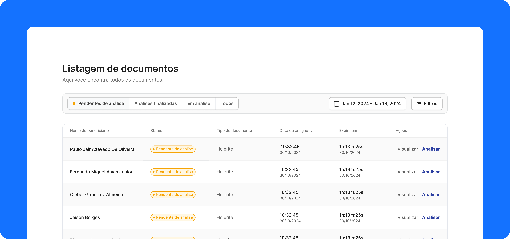
Portal de análise de
documentos de
renda com AI
Em 2024, liderei o design de uma ferramenta de backoffice de crédito. O objetivo era integrar inteligência artificial ao processo de verificação manual realizado por analistas de crédito, uma tarefa sensível e de alta responsabilidade. Com a ideia final de que diminuíssemos o custo e o tempo de análise (SLA).
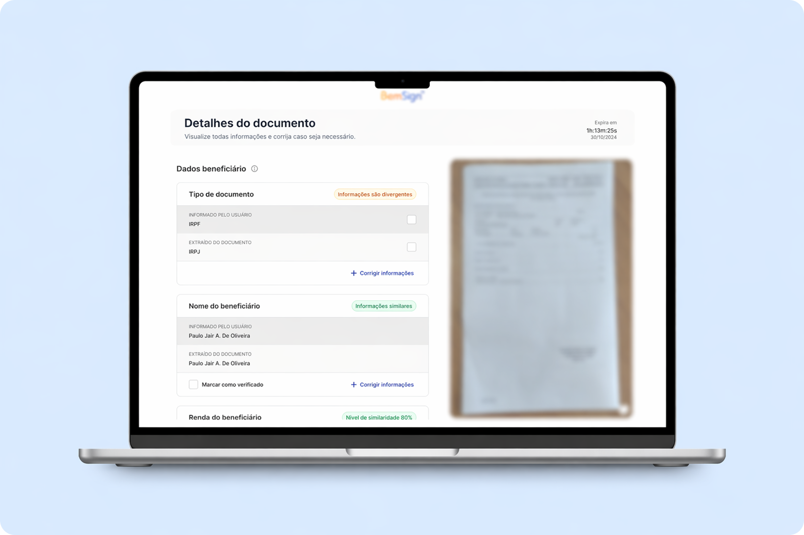
O cliente utilizava de uma empresa parceira para fazer a análise de documentos de renda, esses documentos eram enviados através do preenchimento de um formulário de empréstimo consignado.
O custo e o SLA eram muito altos, grande demanda e um processo manual. Com isso notamos que era ineficiente e prejudicial a curto e longo prazo. Além dos 2 pontos principais citados, ainda existia o retorno por análise errada, gerando mais tempo de atraso.
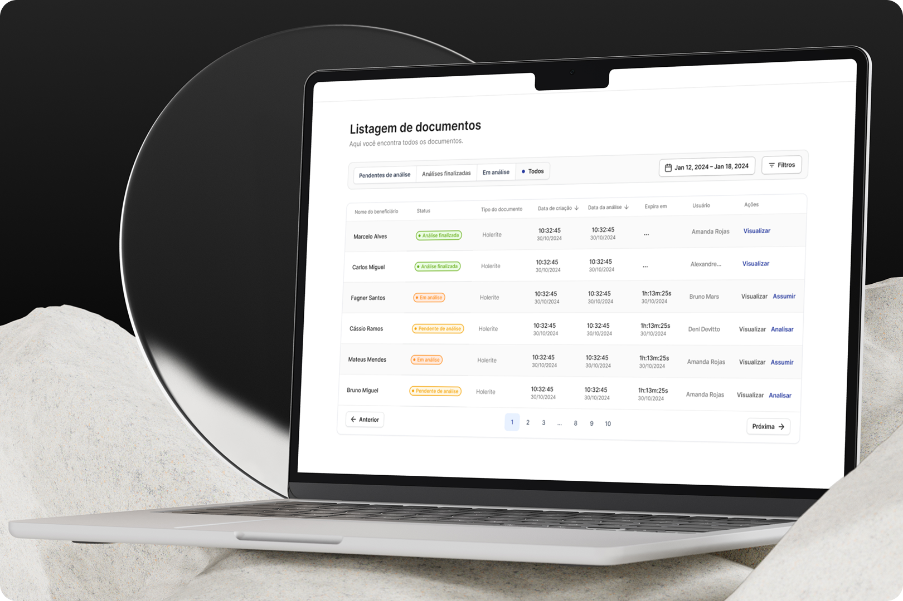
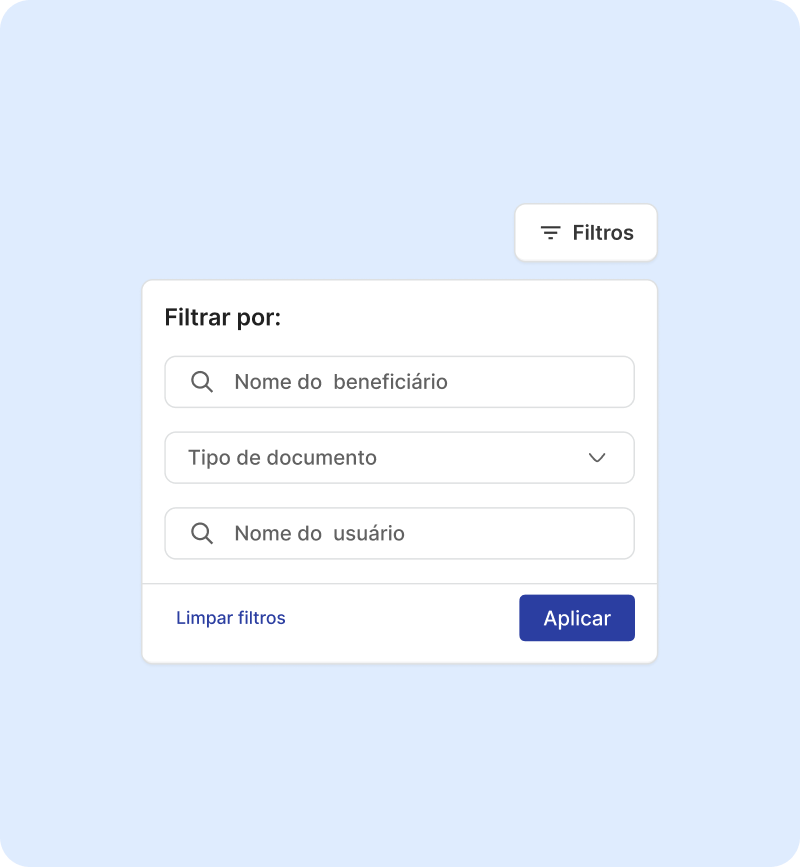
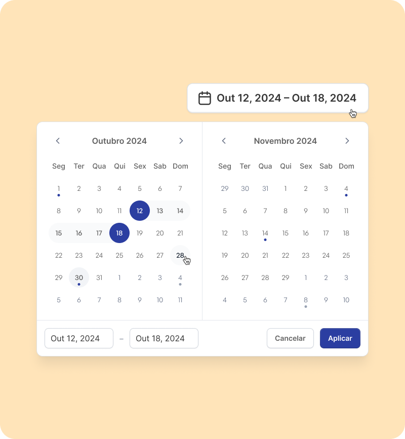
Através das reuniões com stakeholders e entrevistas com analistas entendemos que seria possível desenvolver uma solução que utilizava IA. A nossa ideia foi de treinar uma inteligência artificial para ler e reconhecer os inúmeros tipos de documentos aceitos, entender as informações que deveriam ser extraídas e assim iriamos conseguir agilizar o processo e diminuir os custos automatizando o processo de análise.
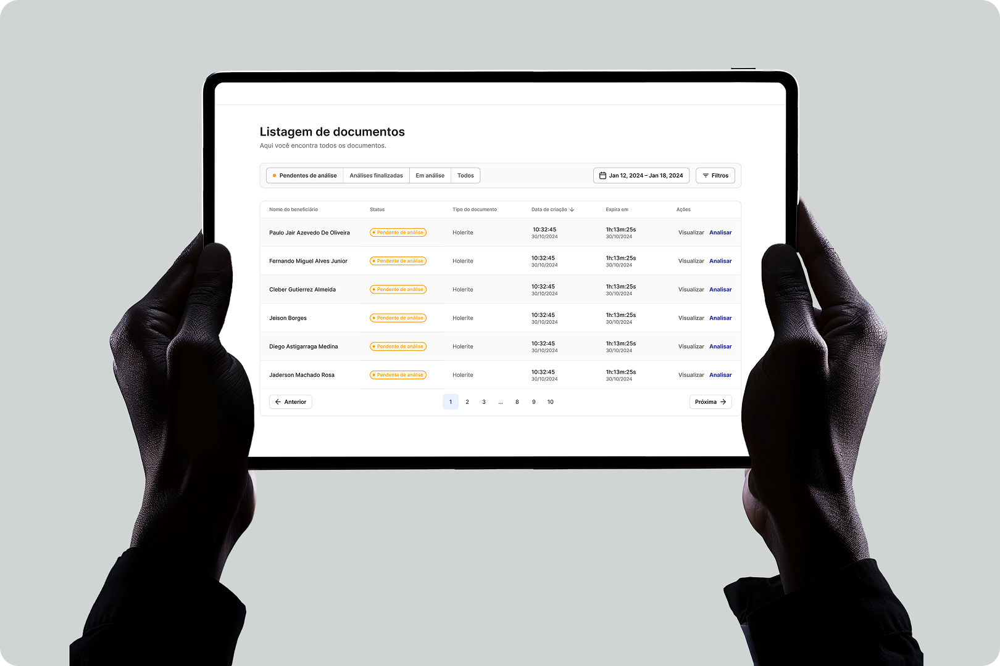
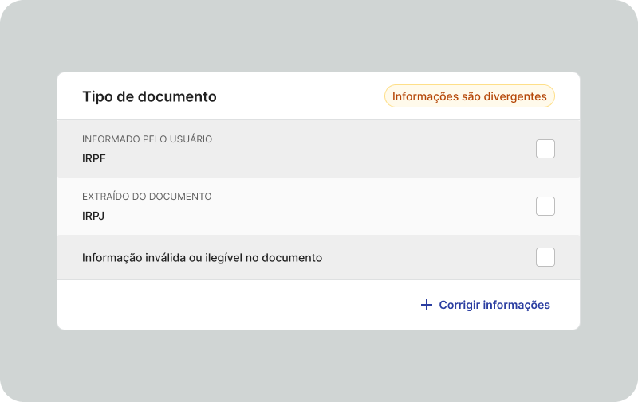
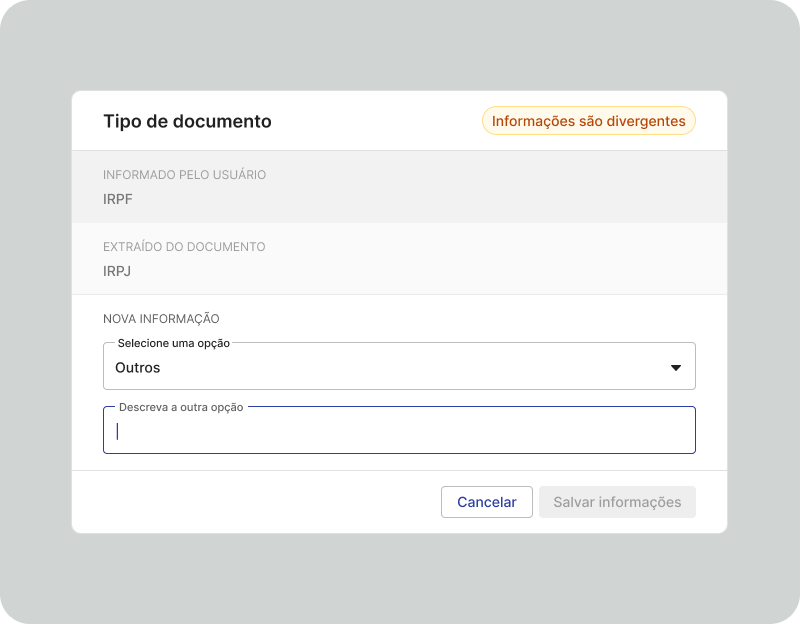
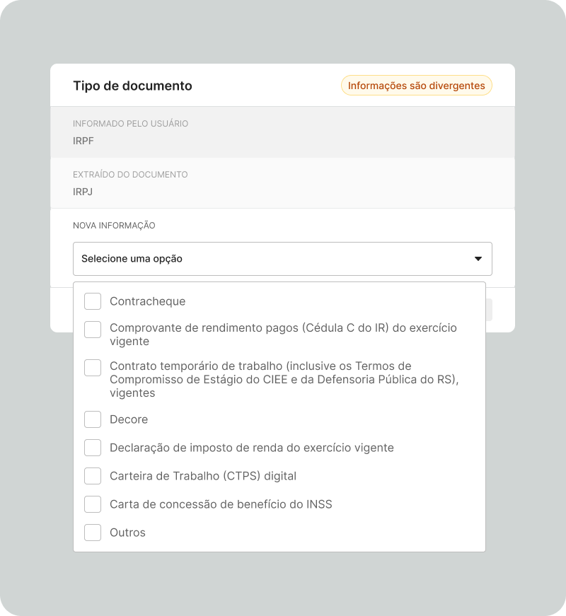
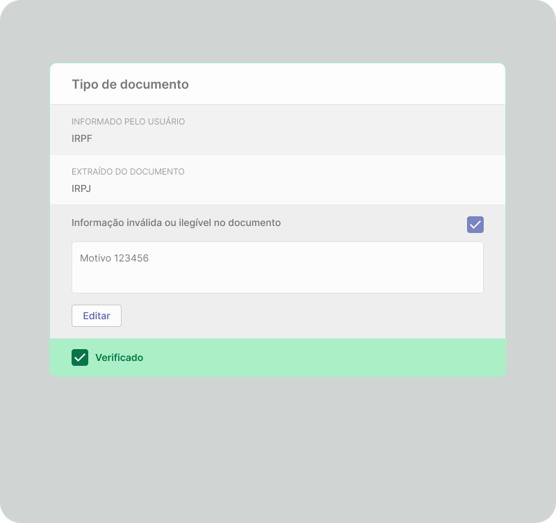
Finalizamos o MVP e, após os primeiros testes, os resultados indicaram ganho de eficiência operacional e melhor experiência para os usuários.
- O SLA era de aproximadamente 4 horas por análise (desde a chegada do documento, até a aprovação) diminuiu em aproximadamente 73%.
- Esse resultado foi acima do que esperávamos para o primeiro mês, quase atingimos o objetivo que planejamos alcançar ao decorrer dos 3 primeiros meses.
- O custo por análise girava em torno de R$8/ documento, e aqui tivemos um resultado fenomenal, o custo por análise bateu 87% de redução.
Todo o produto ainda demanda o auxílio de alguns analistas de crédito, eles verificam se a análise da IA está correta e se sim, aprova. Porém isso é somente enquanto treinamos a IA e a equipe de analista que era de 6 pessoas diminuiu para 2. Nosso objetivo para o futuro é de que com as iterações e análises vamos conseguir diminuir para um analista e dentro de 6 meses queremos deixar a ferramenta totalmente automatizada.
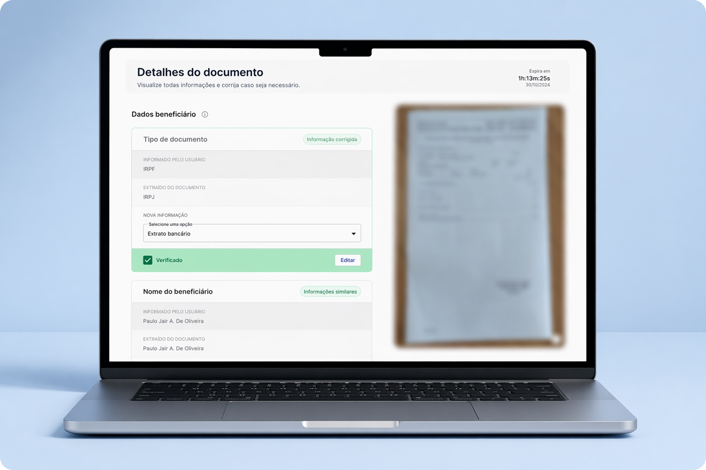
Quando o cliente é pouco acessível, reuniões pontuais e com pautas bem estruturadas conseguimos extrair informações necessárias para o projeto, roteiro de pesquisa bem elaborado resulta em rápidas entrevistas e torna mais fácil a sintetização das informações.
Testar hipóteses para validar estrutura, mesmo que em wire, compensa. E para concluir, não ter medo de testar novas tecnologias para resolver um problema pode te render um prêmio de melhor produto do ano no evento de final de ano da empresa :)